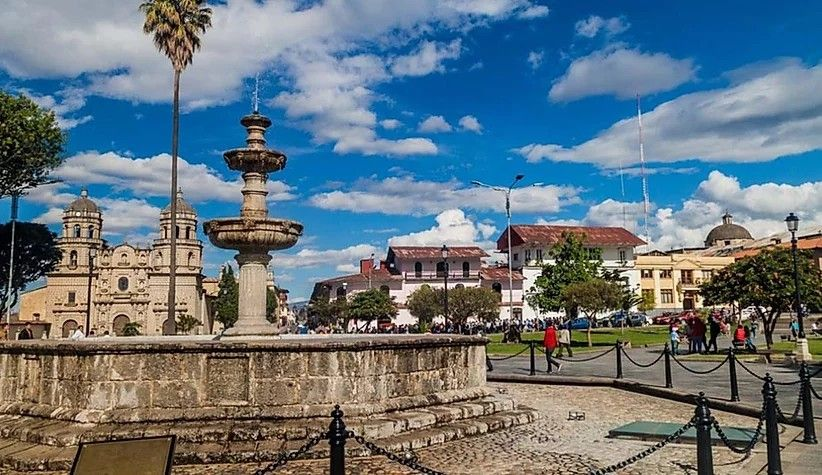
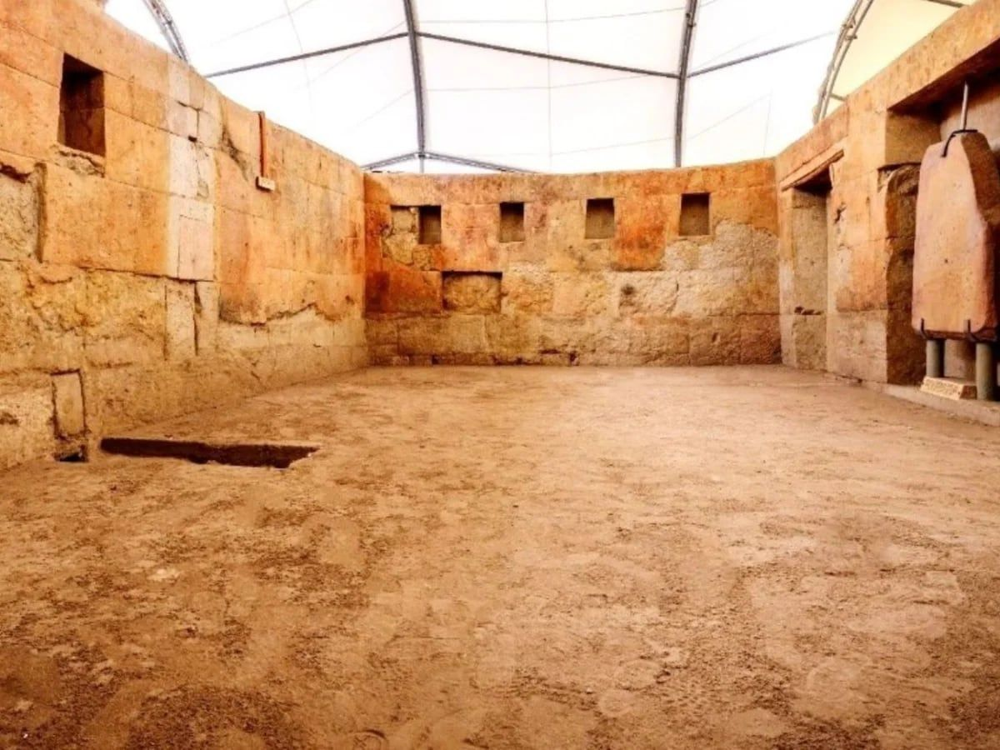
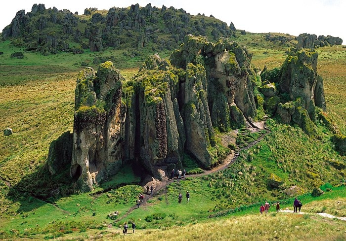
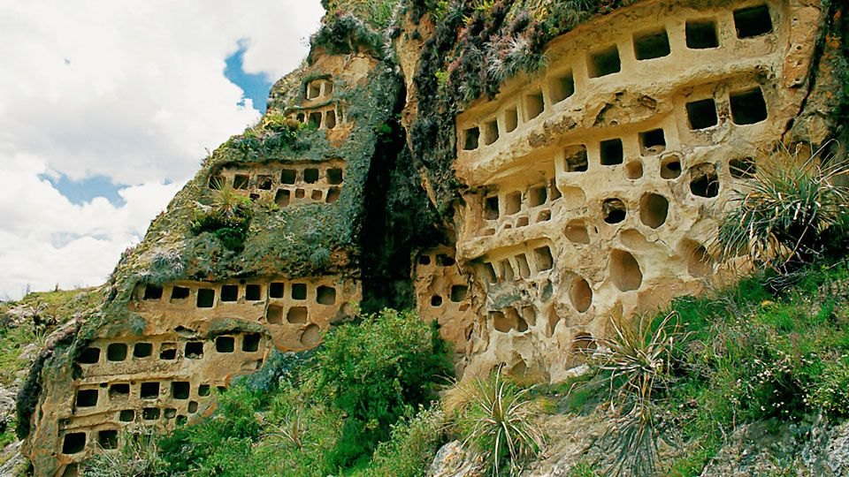
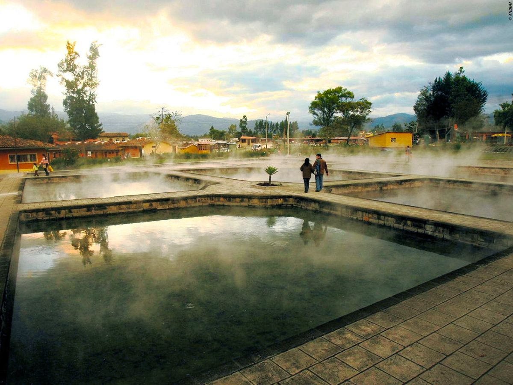
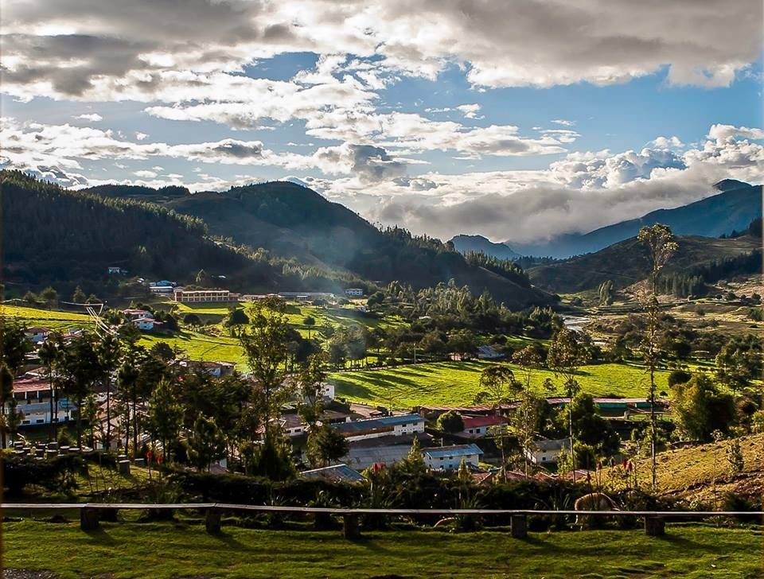

Plaza de Armas
Historic center
Explore the heart of Cajamarca, surrounded by historic architecture, the cathedral, and local life.
Explore our region
From historic landmarks to breathtaking landscapes, discover the places that make Cajamarca unique.
Welcome! Let us help you discover Cajamarca.
History, culture and nature

Historic center
Explore the heart of Cajamarca, surrounded by historic architecture, the cathedral, and local life.

History and heritage
Visit an important historical site connected to the encounter between Inca and Spanish history.

Nature and archaeology
Admire impressive rock formations and an ancient canal in a remarkable highland landscape.

Archaeological heritage
Discover ancient funerary niches carved into volcanic rock near the city.

Wellness and relaxation
Learn about the area's famous thermal waters and its long-standing connection to local tradition.

Rural tourism
Experience green landscapes, forestry, and community-based tourism in the Cajamarca region.